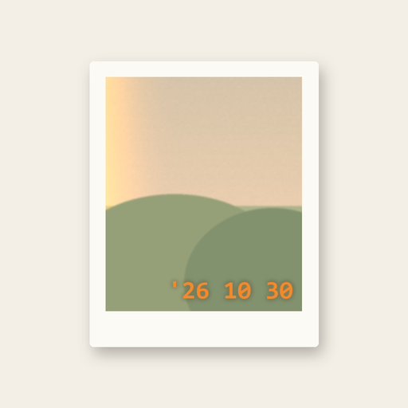

오늘의 값어치
지나가는 하루를 영수증으로 남기다
오늘의 값어치는 하루 86,400초를 1초 1원으로 적립하고, 오늘에 담은 것과 목표, 오늘의 한 컷 사진을 모아 자정에 하루의 영수증을 발행하는 안드로이드 앱입니다. 하루가 얼마나 소중하게, 또 얼마나 빨리 지나가는지 느끼게 하는 데 집중했습니다.
주요 기능
- 남은 시간이 줄어드는 모래시계와 오늘 적립한 ₩ 잔고, 치킨 1마리 값 같은 비유
- 아침·오후·저녁 시간대별 "오늘에 담을 것" 3개씩, 마음에 안 들면 바꾸거나 직접 적기
- 매일 목표와 기한이 있는 목표, 대충 산 날의 마이너스와 누적 잔고
- 오늘의 한 컷: 빛바랜 필름 느낌 필터, 즉석카메라 프레임, 갤러리 저장
- 자정에 발행되는 하루 영수증, 올해 365장의 필름 앨범, 어제의 영수증 아침 알림
- 선택 참여: 전국·지역·친구 순위, 오늘 사람들의 하루 보기, 내 하루 공개하기
- 선택 연결: 폰 사용 시간·시간 도둑 앱·걸음 수를 하루 값어치에 반영
다운로드
Google Play 출시 준비 중입니다.
문의
tsdint@naver.com